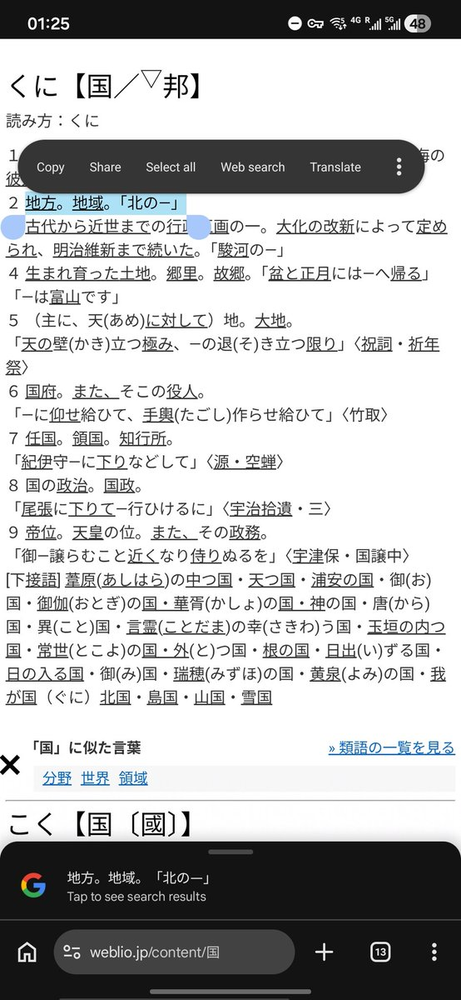

Aoi M
@aoim33
冷知识
在日语里 国 くに 这个字本来就有地区的意思
于是在现代汉语以及跨文化翻译的语境下，成了第二十二条军规
因为听话人总是会按照自己的意愿去解读说出来的话
所以不管怎么说都没用，还不如删了推文然后思密码森呢
至少还能保住市场不是吗

Aoi M
@aoim33
冷知识
在日语里 国 くに 这个字本来就有地区的意思 https://t.co/O8qh2yuxT4 https://t.co/ZMUQaHw3Ue
︎アノ
@414E4E4F
@CyberKanjousen 删帖了，原来把港澳台都算成独立国家了